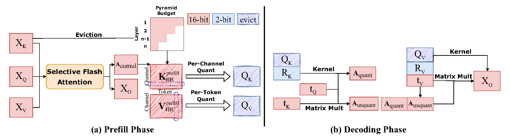
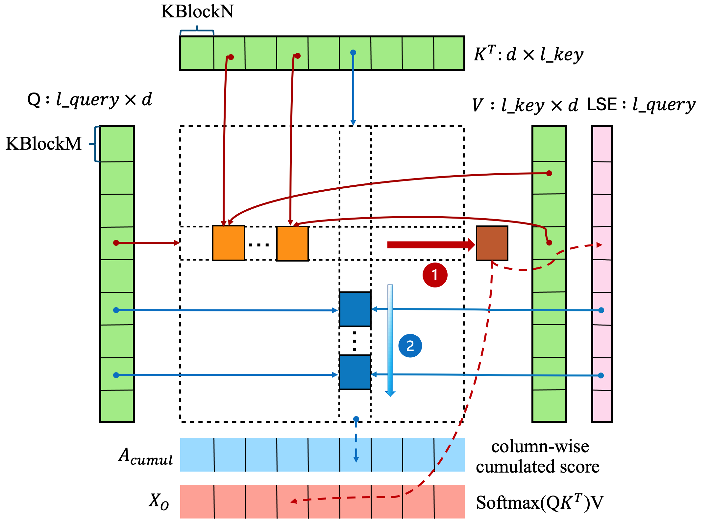
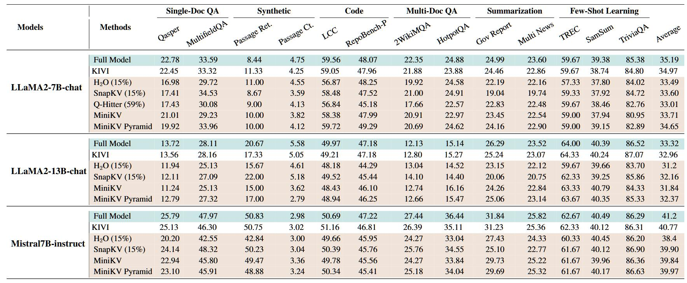

News
- 🎉 2025-5 MiniKV is accepted by ACL 2025 (Findings).
State-of-the-art 2-bit KV cache quantization techniques achieve excellent results in accelerating LLM inference while retaining accuracy on long context tasks. However, further pushing the compression ratio fails to deliver performance gains. In this work, we revisit these approaches by considering, additionally, adaptive KV methods that retain LLM accuracy with only a subset of KV states. This leads us to propose a method based on 2-bit KV cache quantization with adaptive KV policies. In addition, we take an algorithm and system co-design approach by developing hardware-friendly kernels to accelerate LLM inference while making MiniKV compatible with existing memory-efficient attention techniques such as FlashAttention, effectively translating algorithmic improvements into system performance gains. Experiments on a wide range of long context tasks show that MiniKV effectively achieves $>$80\% KV cache compression while retaining accuracy, outperforming state-of-the-art methods while achieving excellent latency, throughput, and memory consumption improvements in long context inference.


Performance evaluation of MiniKV on various models in a range of benchmarks in LongBench. Rows marked in brown have a similar KV cache size, while KIVI and the full model use a larger KV cache. For LLaMA2-7B-chat, MiniKV-Pyramid achieves an average accuracy of 34.65, obtaining 98.5% of the full model accuracy 35.19. MiniKV is also able to maintain accuracy on LLaMA2-13B-chat and Mistral-7B, indicating that our approach generalizes well across datasets and model classes. While the full model and KIVI perform marginally better than MiniKV, they have much larger KV cache memory consumption. The synergistic composition of 2-bit quantized KV and layer-wise adaptive KV delivers these improvements, and it also shows the promising aspect of using both quantization and adaptive KV in conjunction to reduce the high memory footprint of the KV cache.

@article{2024minikv,
title={MiniKV: Pushing the Limits of 2-Bit KV Cache via Compression and System Co-Design for Efficient Long Context Inferences},
author={Akshat Sharma, Hangliang Ding, Jianping Li, Neel Dani, Minjia Zhang},
journal={arXiv preprint arXiv:2411.18077},
year={2024}
}